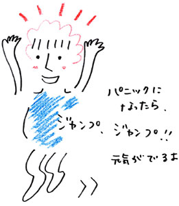

| 「パニック障害ですね」
佐々木さんのカウンセリングが終わると、富岡という医師が診察室に入ってきて、はっきりとそう言った。パニック障害？ テレビである芸能人がその病名を口にしていたのをぼんやり思い出した。と同時に、おなかに鈍い痛みが走る。
「私に精神的に欠陥があるっていうんですか。失礼ですが、ただあの佐々木さんがカウンセリングをしたにすぎない。それだけで診断するのが納得いきません。根拠はあるんですか」
一気にそれだけ言うと、富岡医師がこちらを見た。
「血液検査も心電図も異常がなくて、あなたは昨夜過呼吸でこちらの病院に来られた。それが根拠です」
無表情なまま、きっぱりと言う。
「それからあなたが同僚を“汚い”と思ったのは、強迫性障害という心の病気です。とりあえず気分が明るくなる薬を処方しますので飲んでください。それからパニックになった時ように、安定剤と睡眠薬も処方します」
信じられなかった。嘘でしょう。なんでよ、なんで何の不自由もなく暮らしている私が、精神病になんてなるわけ。
「誰にでも起こりうることです」
私の心を見透かしたように医師が言った。
「あなたはご両親が離婚されて、お母さんと二人で生活してらっしゃる。大手のところにお勤めのようですから、頑張ってこられたんでしょう。心の病気は、そういう真面目な人ほど一生懸命な人ほどなりやすい」
手が汗でじっとりして洋服の裾を握りしめた。
「本当は仕事も休んだ方がいいんですよ。時間に追われる生活をやめる。それから“汚い”という気持ちが起こっても、できるだけ洗ったりしない。洗えば洗うほど、状態はひどくなります」
「……治るんですか？」
やっとのことで出した声はかすれていた。医師がこちらを見て言う。
「治ります。薬を飲んで、私が今言ったことを守れば。１週間後、また来てください」
診察室から出たら、もう待合室には誰もいなかった。
突然くらくらと世界がまわって、私はトイレにかけこむ。鏡の前に座り込んだ。
パニック障害だって。強迫性障害だって。嘘。安定剤なんて飲みたくない。それに仕事だって休むわけにはいかない。やっと面白くなってきたところなのに。第一私が働かなかったら、生活だって苦しくなる。言えない、お母さんには今日のことは絶対に言えない。
いろんな思いがこみあげてきた。
「大丈夫？」
はっと顔をあげると、隣に女の人が立っていた。さっき待合室にいた人だ。私と同じくらいの若い女の人。
私はうなづいて立ち上がった。女の人がハンカチを差し出してくれる。私は慌てて頬をぬぐって、首をふった。
「大丈夫です。ありがとうございます」
「辛いよね」
女の人が首を傾けて、ニコッと笑った。思わず心がゆるんで、本音が出る。
「辛いって言うか……信じられない」
そう言ったら、また視界が揺らいできた。女の人はバックからペンを出すと、紙に何かを書いて私に差し出す。
「私、江崎って言います。辛くなったらメールちょうだい。気が紛れるかもしれないから」
正直、受け取りたくなかった。私はあなたとは違う。そう言いたかった。でも普通の生活だって、そんなのは失礼だ。私はうなづいた。
「ありがとうございます」
でも自分の名前は名乗らずに、トイレを出た。もらった紙切れをバックに投げ入れる。
家に帰って気づいたら、洋服を全部脱いでいた。下着姿になって、足元に落ちている、今さっきまで着ていた洋服を見下ろす。
汚い。あの病院で汚れた。汚い。汚い。
「だめ、洗っちゃ、だめっ」
今日、医師に言われたことを思い出して、私は叫んだ。洋服をつかむ。でも着れない。汚い。病院での菌がいっぱいついている。そんな思いがわきあがってくる。
お風呂場に入った。洋服に洗剤１箱をぶっかける。シャワーを流す。洋服にさわった私の手も汚れた。汚い……。ボディソープで手を必死に洗う。止まらない。止まらないよ。
私はボディソープが空になるまで手を洗い続けた。
数時間後、やっと服を着てベットに座る。もう窓から見える外は暗い。突然机の横に置いてあるバックに目が止まった。
あれも汚れている。
体が勝手に動きだした。リビングでダンボール箱を見つけて、その中にバックと外に着ていったコートを入れる。そして封をした。
これで大丈夫。もう汚くない。こうして外の物と、家の物をわければいいんだよね。やっと安心してまたベットに腰かける。
「朋美、いるのー？」
お母さんだ。足音が近づいて、部屋のドアがあいた。
「あぁ、帰っていたのね。良かった。検査はどうだったの」
優しい顔でお母さんが聞く。
「うん、大丈夫だって」
私もできるだけ感情をまじえずに答えた。
「そう、良かった。会社の人も心配してたわよ。……あら、なんかこの部屋寒いわね」
そう言って、お母さんが私の部屋に一歩入った途端、私は叫んだ。
「入ってこないでっ」
お母さんが驚いてこちらを見る。私は慌てて笑顔をつくった。
「ごめん、大声出して。あとでちゃんと行くから、お母さん、リビングに行っててよ」
心配そうな顔をしたものの、お母さんはすぐに笑顔になる。うなづいて、出ていった。
私は部屋にあったウェットティッシュをつかみ、お母さんが触ったドアノブを拭く。
何で拭いてるのよ、お母さんが触っただけじゃない。もう一人の自分が私に聞く。
わかんない。わかんないけど、汚いっていう気持ちがおさえられないの。ウェットティッシュを何枚も何枚もつかみながら、涙がこぼれる。
ダンボール箱に駆け寄って、封をあける。バックから薬を取り出す。飲むもんかって決めていたのに……。迷いは一瞬で、すぐにお茶と一緒に飲んでしまった。今のこんな気持ち、たえられない。
数十分経つと気持ちがおだやかになって、私はリビングへ行ってお母さんと夕食を食べた。
夕食後、部屋に戻ると、薬のせいか頭がボ−ッとした。いい気持ち。やっぱり私が病気なわけないよ。明日から会社に行こう。そう思っていたら携帯が鳴った。彼氏のヨシくんだ。
「もしもし」
心配そうな声が聞こえた。
「おっ、昨日電話出ないから心配したよ。今日偶然智子に会って、会社休んでるって聞いてさ。カゼでもひいた？」
智子は私の同僚で、ヨシくんを紹介してくれた子だ。ヨシくんも私と一応同じ会社だけれど、部署が違うから会社で顔を合わせることはあまりなかった。
「カゼと言えば、カゼかな。心のカゼかも」
そう口に出したら胸がスーッとした。
「どういうこと？」
「昨日過呼吸になって、今日お医者さんに見てもらってね、ま、心の問題でしょうみたいなことを言われたの」
「……大丈夫なのか」
真剣な声だった。
「平気、平気。今はなーんともないもん。明日は会社行くよ」
ふふっと笑い声まで出た。
「あんまり無理すんなよ。まあ朋美がもし精神病になっても、俺はそばにいるからさっ」
明るい口調のヨシくんの声に、胸がじんわり温かくなった。ありがとう。心の中でつぶやく。
「じゃあ明日夕飯でも食いに行くか」
「行く行く」
元気な声でそう言って、電話を切った。
翌日、ダンボール箱からコートとバックを出して、私は会社に出かけた。バックの中には念のために薬も入れてある。
会社に着くと、優ちゃんや智子が近づいてきた。
「朋美、大丈夫なの。昨日お母さんが貧血で倒れたって電話くれたけど」
「うん、大丈夫」
優ちゃんがいなくなった後、私はウェットティッシュで丁寧に机をふいた。もう大丈夫、きれいになった。机に座って仕事を始める。
「山下さん、ちょうど良かった」
部長から声がかかる。
「今日さ、例の商品の販売について会議やるから参加してよ。先週打合せした件、まとめてみんなに発表してくれないかな」
「わかりました」
ニコニコしながら部長が続けて言う。
「この販売からチーフとして動いてもらうからね。よろしく」
胸が高鳴った。やった、ついにきた。同期の中で私が一番最初の出世だよ。うれしい！
部長に頭を下げて、私は会議のための資料を作成する。
午後になって、みんな会議室に向かった。私も資料を持って席につく。みんなが揃ったところで部長が私に目で合図をし、私は立ち上がった。
「これから山下さんがチーフとして現場の指揮をとることになりました。今回の販売も彼女中心でやっていくから、みんなわからないことは彼女に聞いて」
私は10人ほどのチームのメンバーに頭をさげる。優ちゃんと目が合った。その目が“がんばって”と言っている。嫉妬の色はちっともない。優ちゃんのそんな素直さが好きだった。
私は資料をもって、黒板の前に立つ。商品の説明を始めた。話し始めたら、心臓が音を立てて動いた気がした。だんだん息が苦しくなってくる。苦しい。呼吸の仕方がわからない。一度、机の前に置いてあったお茶を飲もうとする。でも口にふくんだまま飲み込めない。お茶を吹き出してしまった。
「どうしたっ」
「朋美っ」
部長や優ちゃんの声が聞こえる。
「すいません、気分が悪くて……」
私はうずくまったまま、それだけ言った。優ちゃんに引っ張られるようにして、廊下の長椅子に腰かける。
「大丈夫、タクシー呼んで病院行く？」
首をふる。苦しい。息ができない。心臓をぎゅっとわしづかみされた感じだった。
「お水、ちょうだい」
優ちゃんはうなづいて、お水を持ってきてくれた。優ちゃんに背を向けるようにして、安定剤を口にほおりこみ、水を飲む。動悸はするけれど、薬を飲んだという安心感からか息苦しさはとれてきた。でもとてもこのまま会議に参加することはできない。
「優ちゃん、ごめん。私やっぱり病院行くから帰るね」
軽いウソをついた。病院に行く気なんてない。
「うん、それがいいよ。ちゃんと診てもらった方がいいよ。下まで付いていこうか？」
優ちゃんが私の顔をのぞきこむ。私はかすかに笑って、首をふった。エレベーターに乗り込んで、優ちゃんに手を振る。ドアが閉まった。
会社の入口からタクシーに乗って家に向かう。
家に帰って今日着ていた服を全部ダンボールに入れたら、薬のせいか急速に眠気がおそってきた。裸のままでベットに横たわる。
起きた頃にはあたりは暗かった。
ヨシくんとは家の近所のレストランで待ち合わせをしている。私は慌てて服を身につけてレストランに向かう。起きたら動悸もおさまっていて気分が回復していた。
店の前でヨシくんを見つけて、笑顔で手をふる。
「今日、大丈夫だった？」
ヨシくんの心配そうな顔。でも会社を早退したことは知らないみたいでほっとした。
二人でいつものようにメニューを選んで、お酒を飲みながらご飯を食べて、楽しかった。大好きなレモンシャーベットを食べながら、ヨシくんが私の顔を見てニコニコと笑う。
「元気になったみたいで良かった」
「ごめんね、心配かけて」
私もヨシくんに笑い返す。テーブルの下で温かい感触にぶつかる。ヨシくんがそっと私の手を握ってきた。
その瞬間、背中に汗が１滴流れていくのを感じた。私は手を振り払う。ヨシくんの目とぶつかった。
「朋美……？」
私の本当の心を読まれそうな、まっすぐな目だった。
「ちょっと、トイレ行ってくるね」
慌ただしく席を立って私は洗面所に向かう。ハンドソープを思いっきり出して、水で流した。ヨシくん、ごめん。ごめんね。洗いながら、心の中で必死に謝る。
途中で２人ぐらいの人が不思議そうな顔で私を見ながらトイレに入っていったけど、やめられなかった。もう体裁なんかかまってられない。流しても流しても、ヨシくんとつないだ手の感触が残っていて怖かった。
「朋美」
突然背後から名前を呼ばれてギョッとして振り返ると、ヨシくんが立っていた。血の気が引いていく。ヨシくんの顔も青ざめていた。
「出よう」
うなづいたら涙が出た。それでももう一回だけハンドソープをつけて、手を洗った。
外は春とは思えないほど、空気が冷たかった。
ヨシくんは私の前をトボトボと歩いて、小さな公園の前で止まった。大きな木の幹にもたれかかりながら、こちらを見る。
「カゼなんかじゃ、ないんだろ」
私は必死に首をふる。
「なんの病気なの」
優しい声だった。
「パニック障害と、強迫性障害っていう病気なんだって」
ヨシくんがため息をつく。
「でも、私はそうは思ってない。今はちょっと疲れてるけど、すぐ前みたいに戻るからっ」
私は叫んだ。必死だった。
「さっきのは、ちょっと疲れてるとか、そういうレベルじゃなかったろっ」
ヨシくんも声を荒げて、こぶしで木の幹を叩いた。
「今日だって倒れたんだろ。聞いてたよ、智子から」
知ってたんだ。知ってて、こちらをうかがってたんだ。ヨシくんが私の肩を両手でつかむ。
「なぁ、ちゃんと会社休んで治療しろよ。このままでいいわけないよ」
「触らないでっ」
私はヨシくんの手を振り払う。
次にヨシくんを見た時、明らかに彼を傷つけたのがわかった。悲しそうな目。
「ごめん……」
声にならない声でヨシくんが言う。
違うの、そうじゃない。ヨシくんが嫌いなわけじゃないの。
ヨシくんが背を向けて、駅の方に歩いていく。
「そばにいてくれるって言ったじゃない」
たぶんその声は聞こえなかったと思う。ヨシくんは振り返らなかった。
私は公園で一人しゃがみこんで、両手を土につく。ひんやりとした感触。この土は汚いと思わないのに、どうして……。ポタポタと土に大きなしみが出きていく。
あたりのお店の電気が消え、公園が真っ暗闇に包まれるまで、私にはそうしてうずくまっていることしかできなかった。真っ暗闇のなかから夜空を見上げると、星がとてもきれいに見える。いつもならその景色を見たら胸が透き通っていくのに、今日は笑えなかった。
帰ったらお母さんに全部話そう。
ただ心にそう強く誓った。（つづく）

|